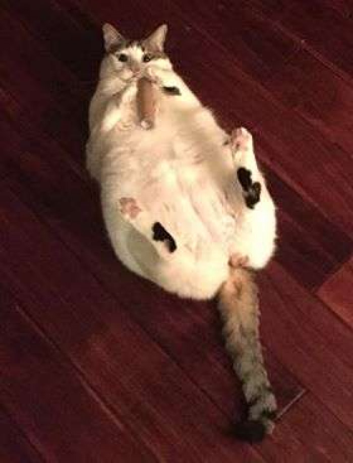
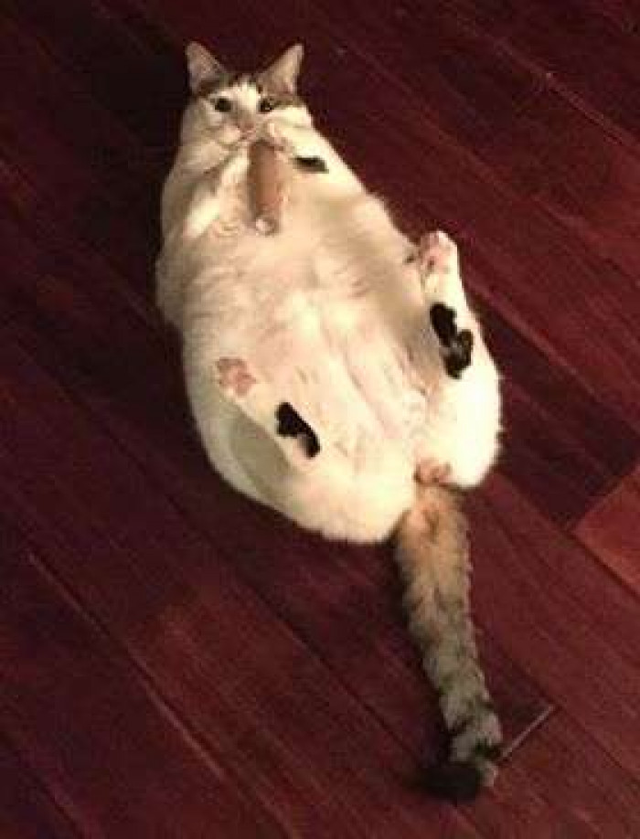

The Portfolio
(Scroll to the bottom for a surprise)Hello, I am Anthony Achille, Check out my GitHub and follow me on Instgram: @anthony.achille
Background:I have always been interested in programming and computers in general. Ever since I could remember I wnated to learn more about computer and how they work. Technology has always been interesting and being able to control them with code. As soon as I could take a class about computers in highschool I did, I took Computer Science 3 the first year and continued with the path after that. Before I could do that at school I went to camps over the summer to learn different languages each time.
I also like to Golf and have for 9+ years. I have been playing since I was like 6 or 7 because my Nonno introduced me to it. I've also played basketball and baseball but I didn't like them as much as I liked Golf. I tried out for the golf team the first year I could when I was a freshman in highschool. The next year I did the Junior Varsity with a bunch of my friends. I did the same thing this year my golfing friends for a couple games.
Photography:I like to photogragh anything that I get the chance to take pictures of. Some of my favoritie pictures where the ones from our trip to europe. I also like to take picutres of bird that are nearby since we have a lot of trees and a lot of possiblities to see a bird. I also would like to take landscape photos but I haven't been there with my camera a lot of the time when I see a landscape that is worth photograghing.

 Hidden Talent(s):
Hidden Talent(s):
One of my hidden talents is that I can solve a rubiks cube in under one minute with my average being around 40 seconds. I have been practicing with the rubiks cube since september in 2016 but it wasn't unitl february 2017 that I was able to solve in under 1:30 and without the algorithm sheet. Ever since then my time have stayed steady at 30-40 seconds since I don't do it that often anymore. I can still reliably get under 50 seconds but I'm far worse than I was before.
Chonky Cats:
 
